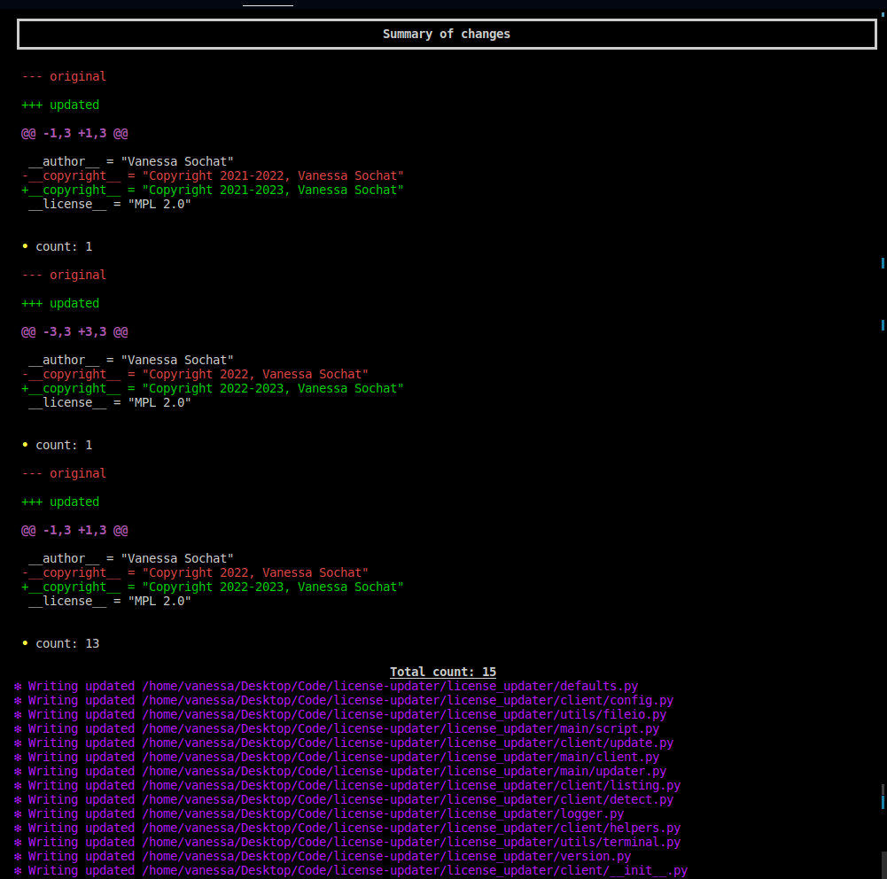

User Guide¶
The License Updater will make it easy to update license years in different kinds of files. I created this tool after having to manually update files across several repos, always in the new year, and realizing I could make something specific to my need to automate it. This also means the tool is specific for my (the developer) needs, and you should open an issue on the GitHub issue tracker if you have a use case that is different. I hope overall it is also useful to you as it is to me! If you haven’t read Installation you should do that first.
Quick Start¶
There are two primary functions - to detect and update!
The first previews changes to file (or directory) and the
second writes the changes to file.
$ license-updater detect mypackage
$ license-updater update mypackage
And that’s it! The action comes with several getting-started_updaters` that will look for particular aspects to lint or update. If you have a request for a new updater, please open an issue, More detailed usage and examples are detailed below.
⭐️ Commands ⭐️¶
For all commands below, the license updater can accept a directory with files, or a single file. To start, we expect a directory with files or a direct path to a file.
List¶
View updaters available (and descriptions)
$ license-updater list-updaters
┏━━━━━━━━━━━━━━━━━━━━━━━━━━┳━━━━━━━━━━━━━━━━━━━━━━━━━━━┳━━━━━━━━━━━━━━━━━━━━━━━━━━━━━━━━━━━━━━┓
┃ Title ┃ Identifier ┃ Description ┃
┡━━━━━━━━━━━━━━━━━━━━━━━━━━╇━━━━━━━━━━━━━━━━━━━━━━━━━━━╇━━━━━━━━━━━━━━━━━━━━━━━━━━━━━━━━━━━━━━┩
│ Python-copyright-updater │ python_copyright_metadata │ update __copyright__ in python files │
└──────────────────────────┴───────────────────────────┴──────────────────────────────────────┘
The “Identifier” is what you can use to select an updater with -u.
Detect¶
The detect command can be run on any action file (or folder) to determine if there are updates to be made.
$ license-updater detect mypackage
Note that you can add one or more “ignore patterns” to skip files or directories:
$ license-updater detect mypackage -i tests
If a file has updates, it will print to the terminal a summary of updates for preview.
And after you run update (described below) you will see all green!
You can also select to use one or more specific updaters (add multiple -u` or `--updater`):
$ license-updater detect -u setoutput .github/workfows/main.yaml
Update¶
An update command performs a detect, but then writes changes to the file.
$ license-updater update mypackage
For either of the update or detect commands, turn off details by
adding the --no-details flag.
Please open an issue if you’d like to see other functionality or updaters!
Updaters¶
Each updater:
Is provided as a directory under license_updater/main/updaters
Accepts a file name regular expression to know when to check a file
And has those defaults and other metadata briefly documented here!
Python Copyright Metadata¶
The python copyright updater looks for __copyright__ in files. Specifically,
we look for this pattern in the header, and:
check to see if it is up to date, meaning there is a date like
<start>-<end>and end is the current year.if not up to date, check if it has a range (as above) and update the end year.
if it’s a single year, add the current year in the same format.
If you want other functionality, please open an issue, For version sorting and updates, we use pipelib.
Container¶
If you don’t want to install locally, we provide a docker container that you can use! As an example
$ docker run -it ghcr.io/vsoch/license-updater
# which license-updater
And pulling via Singularity (so you don’t change permissions, or can use on an HPC cluster)
$ singularity pull docker://ghcr.io/vsoch/license-updater
$ singularity exec license-updater_latest.sif license-updater detect mypackage
And that’s it!
GitHub Action¶
I decided that I wanted to be able to run a detection to alert me to needing changes at least once a year (maybe twice?) and then use the main branch here so I could always be “subscribed” to new updates. Since cron doesn’t have a “run once a year” setting, we need to hack this a bit! We can ask it to run once a month (on our day of choice) and then only proceed given that we hit a particular month (or set of months). Note that since a GitHub bot (action) is not allowed to write to any workflow file, we can’t open a pull request with changes - we can only run and alert you to run the command locally!
Example¶
Here is an example of running the GitHub Updater to run a detection once a year. This is supported by cron!
name: GitHub Updater (Yearly)
on:
schedule:
# 1st of June, so it's summer and you aren't busy, right?
- cron: "0 0 1 6 *"
jobs:
run-detect:
name: Run License Updater
runs-on: ubuntu-latest
steps:
- name: Checkout Repository
uses: actions/checkout@v3
- name: Detect and Update
uses: vsoch/license-updater@main
with:
token: ${{ secrets.GITHUB_TOKEN }}
# This is the default
path: mypackage
And here is an idea for a hack to make it run more than once a year (but not once a month) - basically just get the month and check if we match!
name: GitHub Updater (Bi-annual)
on:
schedule:
# 1st of every month (and action will check for specific months)
- cron: "0 0 1 * *"
jobs:
test-detect:
name: Run License Updater
runs-on: ubuntu-latest
steps:
- name: Determine if Running
run: |
month=$(date '+%m')
# Run in October or April
if [[ "${month}" == "10" ]] || [[ "${month}" == "4" ]]; then
printf "We are in October or April, run.\n"
echo "do_run=true" >> $GITHUB_ENV
else
printf "We are NOT in October or April, no run.\n"
echo "do_run=false" >> $GITHUB_ENV
fi
- name: Checkout Repository
if: $(env.do_run == 'true')
uses: actions/checkout@v3
- name: Detect and Update
if: $(env.do_run == 'true')
uses: vsoch/license-updater@main
with:
token: ${{ secrets.GITHUB_TOKEN }}
Both of these examples are provided in the examples directory of the repository.